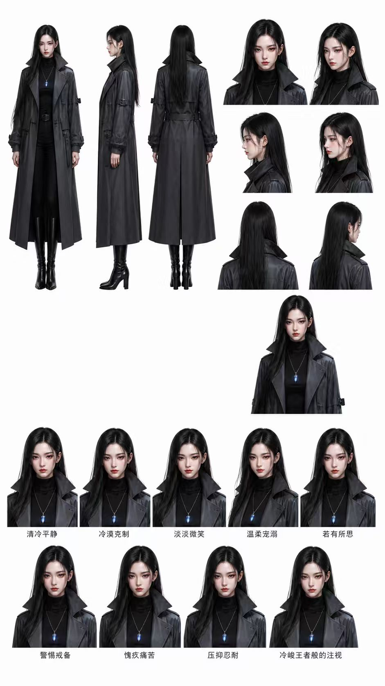
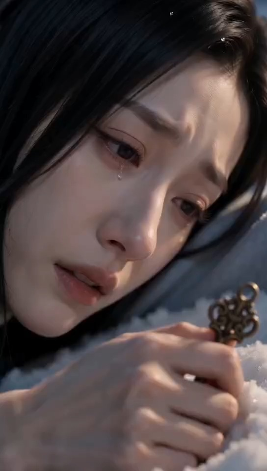
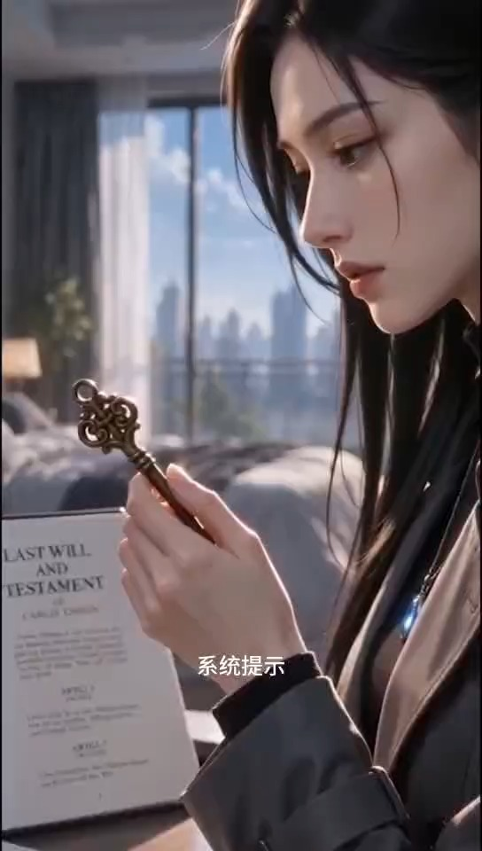
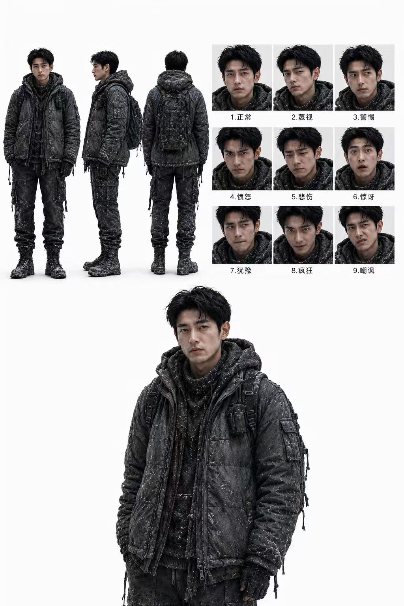
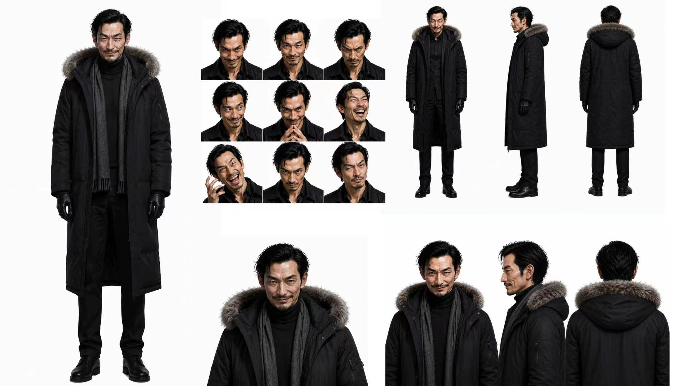
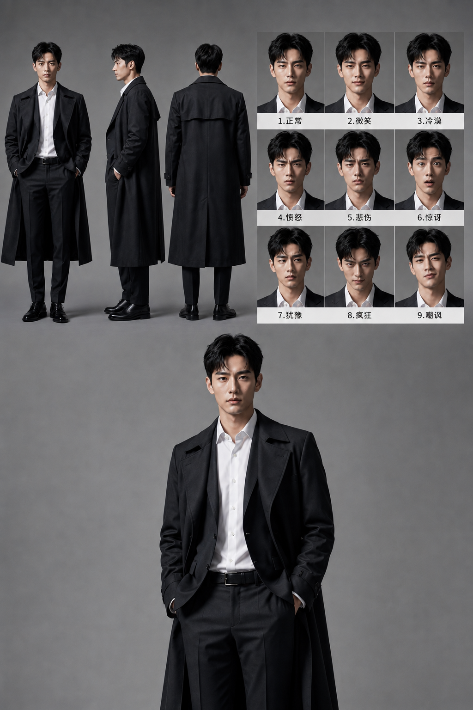
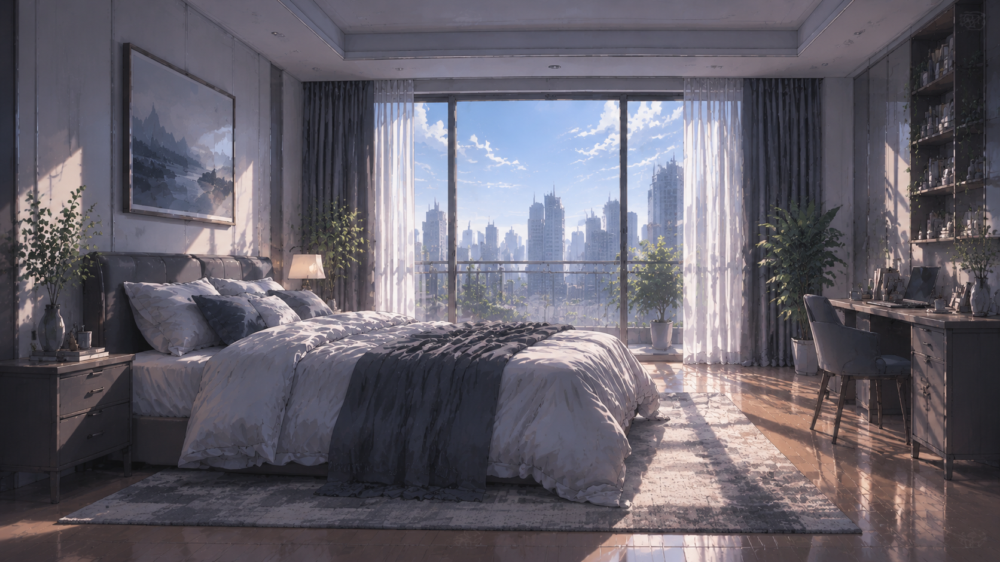
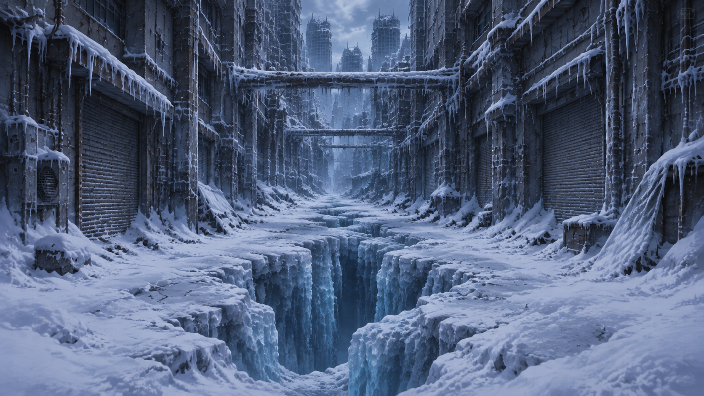

女主 HEROINECASE STUDY 03 · 2026 · AI COMIC SERIES
《重生之我回到了末日前》
AI COMIC / AI VISUAL STORY
AI 漫剧创作
▶ 右侧为第一集最终成片 · 点击播放键直接观看
《重生之我回到了末日前》第一集 · 9:16 VERTICAL FILM
“女主带着记忆重生回到末日降临之前，在灾难倒计时中重新面对亲情、家族与命运，并试图改写结局。”
9:16 竖屏
EP.01 第一集 · 完整成片
FULL PIPELINE 从故事概念到 AI 视频成片


PROJECT OVERVIEW
项目简介
项目背景
尝试将 AI 图像生成、角色设计、场景设计、分镜动态化与短视频制作流程结合，完成一部具有连续剧情和统一视觉风格的 AI 漫剧作品。
项目目标
跑通从剧情构思、角色三视图 / 场景设定、动态分镜到图生视频的完整 AI 漫剧流程，并把静态 AI 画面转化为连续的竖屏短视频成片。
CHARACTER DESIGN
人物三视图
为保证连续镜头中的角色一致性，项目先为每个角色建立固定视觉设定： 全身正面 / 侧面 / 背面三视图、九种表情与多角度特写，作为后续分镜生成的参考图。

男主 MALE LEAD
舅舅 UNCLE
管家 BUTLERKEY SCENES
主要场景


末日前的都市公寓与末日冰封废墟形成前后对照，为连续分镜提供统一的场景基础。
STORYBOARD
分镜设计
故事先经过分镜设计，再进入 AI 视频生成阶段。以下三段为第一集的动态分镜素材（均为 9:16 竖屏）， 横向拖动可查看更多镜头。
STORYBOARD
SHOT DESIGN
VISUAL NARRATIVE
横向拖动 →